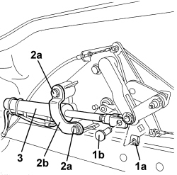
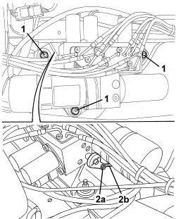
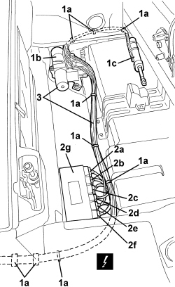
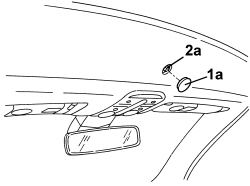
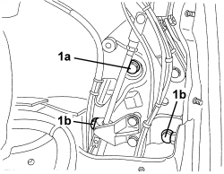
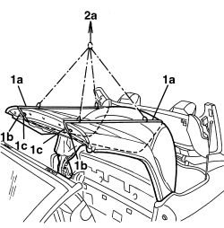
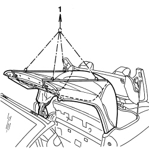
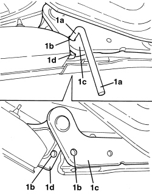
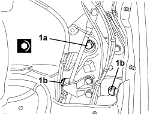
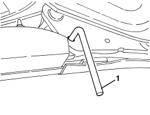

7030H14 HOOD - R.R.
- Path
- Procedures > 70 FITTINGS > 7030 SUN ROOF/GLASS PANEL > 7030H AUTOMATICALLY OPERATED HOOD > 7030H14 HOOD - R.R.
- Kind
- repair procedure (removal / refitting; the operation number is the code)
- Applies to
- engines: 2.2 JTS, 3.2 JTS; all production periods
- Interactive page
- https://sloeber94.github.io/elrnDB-aBrrSpdr/en/#/946004092
Applies to: engines: 2.2 JTS, 3.2 JTS; all production periods
 Removing
Removing
 Refitting
Refitting- Remove both seats
Op. 7045A10 FRONT SEAT (ONE), LEFT OR RIGHT - R.R.
- Discharge the hood hydraulic system pressure.
Op. 0010T79 HOOD HYDRAULIC SYSTEM - DISCHARGE AND RESTORE PRESSURE
Op. 7040H21 MOULDING ON PASSENGER COMPARTMENT REAR TRIM - R.R.
Op. 7040H22 PASSENGER COMPARTMENT REAR TRIM (SPIDER) - R.R.
- Remove both compartments.
Op. 7040L31 REAR ODDMENTS COMPARTMENT - R.R.
Op. 7040L51 REAR ODDMENTS COMPARTMENT SUPPORT - R.R.
Op. 7040H50 REAR PANEL (ONE), LEFT OR RIGHT - R.R
Op. 7065A19 IDLER SUPPORT FOR FRONT SEAT BELT (ONE), LEFT OR RIGHT - R.R.
Op. 7040C11 HOOD HOUSING COMPARTMENT FLOOR TRIM - R.R.
Op. 7040C13 HOOD HOUSING COMPARTMENT REAR TRIM - R.R.
1. Remove the sound insulation cover for the hydraulic control unit.

Applies to: engines: 2.2 JTS, 3.2 JTS; all production periods
1. Working at the rear of the hood housing compartment, release retaining clip (1a) and remove pin (1b) securing the end of the hydraulic actuator.
2. Undo bolts (2a) and remove bracket (2b).
3. Move the hydraulic actuator.

Applies to: engines: 2.2 JTS, 3.2 JTS; all production periods
1. Undo the hydraulic control unit nuts.
2. Release retaining clip (2a) and disconnect hydraulic system pressure release cable (2b).

Applies to: engines: 2.2 JTS, 3.2 JTS; all production periods
1. Working in the hood housing compartment, open all bands (1a) securing connecting pipes and wiring to the vehicle to hydraulic control unit (1b) and hood housing compartment cover actuator (1c).
2. Disconnect electrical connections (2a, 2b, 2c, 2d, 2e, 2f)) from hood electric control unit (2g).
Description | Connector | |
|---|---|---|
2a,2b,2c,2d,2e,2f | HOOD CONTROL UNIT |
3. Release the hydraulic control unit and wiring.

Applies to: engines: 2.2 JTS, 3.2 JTS; all production periods
1. Working on both sides of the hood, above the door housings, apply two pins (1a) (5 mm diameter) in coaxial openings (1b), for levers (1c) and (1d).
(Necessary operation for stiffening the hood frame).

Applies to: engines: 2.2 JTS, 3.2 JTS; all production periods
1. Working in the centre of the crossmember above the windscreen, remove cover (1a).
2. Insert a wrench in square socket (2a) located inside the opening, then rotate the wrench clockwise until it is in the end of travel position (about 90°), to open the front hood locks.

Applies to: engines: 2.2 JTS, 3.2 JTS; all production periods
1. Working on both sides of the hood, undo upper bolts (1a) and loosen lower hood bolts (1b).

Applies to: engines: 2.2 JTS, 3.2 JTS; all production periods
1. Apply two belts (1a) of suitable dimensions to the hood, allowing them to pass through pin (1b) and retainer (1c); slightly tension belts.
2. Fit a suitable lift (2a) to belts (1a) and apply slight tension when lifting.

Applies to: engines: 2.2 JTS, 3.2 JTS; all production periods
1. Using the lift, raise and remove the hood complete with hydraulic control unit and hydraulic actuator for the hood housing compartment cover.

Applies to: engines: 2.2 JTS, 3.2 JTS; all production periods
Refitting
Removing- Check that the hood, complete with hydraulic control unit and hood housing compartment cover hydraulic actuator, is not damaged.
1. Check that on both sides of the hood, above the door housings, two pins have been inserted (1a) (5 mm diameter) in coaxial openings (1b), for levers (1c) and (1d).
(Necessary operation for stiffening the hood frame).

Applies to: engines: 2.2 JTS, 3.2 JTS; all production periods
- Using the lift, raise the hood complete with hydraulic control unit and hydraulic actuator for the hood housing compartment cover and place it in the vehicle.
- Remove the hood lift.
- Remove the belts from the hood.
1. Working on both sides of the hood, screw in upper bolts (1a) and lower hood retaining bolts (1b).
Component | Fastening | dia | Value (daNm) | Validity |
|---|---|---|---|---|
HOOD FASTENINGS | Bolt | - | 4.5 ÷ 5.5 |

Applies to: engines: 2.2 JTS, 3.2 JTS; all production periods
1. Remove the two pins on both sides of the hood.

Applies to: engines: 2.2 JTS, 3.2 JTS; all production periods
- Position the hydraulic control unit and wiring.
- Connect the electrical connections to the hood electronic control unit.
- Place the hood connecting pipes and wiring with the hydraulic control unit and hood housing compartment cover actuator in the hood housing compartment, then fit all the retaining bands.
- Connect the hydraulic system pressure release cable to the hydraulic control unit and attach the retaining clip.
- Tighten the nuts securing the hydraulic control unit.
- Position the hood housing compartment cover hydraulic actuator.
- Position the bracket and screw in the bolts.
- Fit the pin securing the end of the hydraulic actuator and attach the retaining clip.
- Restore the hydraulic system pressure.
Op. 7030H03 HOOD MANUAL OPENING FOLLOWING DEACTIVATION OF HYDRAULIC SYSTEM - CARRY OUT PROCEDURE
- Fit the sound insulation cover for the hydraulic control unit.
Op. 7040C11 HOOD HOUSING COMPARTMENT FLOOR TRIM - R.R.
Op. 7040C13 HOOD HOUSING COMPARTMENT REAR TRIM - R.R.
- Carry out several opening/closing cycles for the hood to check that it is working properly.
- Adjust the hood, if necessary.
Op. 0010T81 HOOD HYDRAULIC SYSTEM FLUID - CHECK LEVEL AND TOP UP IF NECESSARY
Op. 7065A19 IDLER SUPPORT FOR FRONT SEAT BELT (ONE), LEFT OR RIGHT - R.R.
Op. 7040H50 REAR PANEL (ONE), LEFT OR RIGHT - R.R
Op. 7040L51 REAR ODDMENTS COMPARTMENT SUPPORT - R.R.
Op. 7040L31 REAR ODDMENTS COMPARTMENT - R.R.
Op. 7040H22 PASSENGER COMPARTMENT REAR TRIM (SPIDER) - R.R.
Op. 7040H21 MOULDING ON PASSENGER COMPARTMENT REAR TRIM - R.R.
- Restore the hood hydraulic system pressure.
Op. 7030H03 HOOD MANUAL OPENING FOLLOWING DEACTIVATION OF HYDRAULIC SYSTEM - CARRY OUT PROCEDURE
Op. 7045A10 FRONT SEAT (ONE), LEFT OR RIGHT - R.R.
- Check that the hood is working correctly.
- Close the hood using the electric control.
Topics linked from this page (14)
- 0010T79 HOOD HYDRAULIC SYSTEM - DISCHARGE AND RESTORE PRESSURE
- 0010T81 HOOD HYDRAULIC SYSTEM FLUID - CHECK LEVEL AND TOP UP IF NECESSARY
- 7030H03 HOOD MANUAL OPENING FOLLOWING DEACTIVATION OF HYDRAULIC SYSTEM - CARRY OUT PROCEDURE
- 7030H05 HOOD - ADJUSTMENT
- 7040C11 HOOD HOUSING COMPARTMENT FLOOR TRIM - R.R.
- 7040C13 HOOD HOUSING COMPARTMENT REAR TRIM - R.R.
- 7040H21 MOULDING ON PASSENGER COMPARTMENT REAR TRIM - R.R.
- 7040H22 PASSENGER COMPARTMENT REAR TRIM (SPIDER) - R.R.
- 7040H50 REAR PANEL (ONE), LEFT OR RIGHT - R.R
- 7040L31 REAR ODDMENTS COMPARTMENT - R.R.
- 7040L51 REAR ODDMENTS COMPARTMENT SUPPORT - R.R.
- 7045A10 FRONT SEAT (ONE), LEFT OR RIGHT - R.R.
- 7065A19 IDLER SUPPORT FOR FRONT SEAT BELT (ONE), LEFT OR RIGHT - R.R.
- M187 HOOD CONTROL UNIT